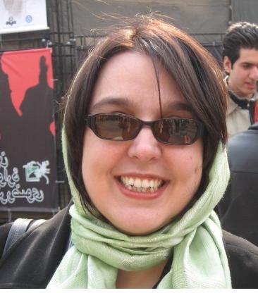

پذيرش > تریبون > مقالات > دو کمپین یک میلیون امضاء در ایران و کنیا و حکایت ماه من و ماه گردون!


 دو کمپین یک میلیون امضاء در ایران و کنیا و حکایت ماه من و ماه گردون! دو کمپین یک میلیون امضاء در ایران و کنیا و حکایت ماه من و ماه گردون!
29 مرداد 1386 - سوسن طهماسبی - نسخه قابل چاپ
در خبری خواندم که در کنیا هم کمپین "یک میلیون امضاء برای تبعیض مثبت" به منظور ایجاد 50 کرسی برای نمایندگان زن در مجلس آن کشور اعلام موجودیت کرده است. نمی دانم آیا این زنان کنیایی از کمپین یک میلیون امضاء ما در ایران خبر دارند یا نه؟ چه بسا که خبر داشتند و فعالیت های ما یا زنان مراکش الگویی بوده است برای پدید آوردن این حرکت ابتکاری در کشوری در قاره آفریقا. چه زیبا که زنان کشورهای جنوب و در حال توسعه از تجربیات هم می آموزند و به ابتکارات هم به این شکل بها می دهند. در کشور کنیا، قطعا دستگاه های امنیتی و قضایی که این زنان را به پیروی و خط گرفتن از یک مشت زن ایرانی محکوم کنند وجود ندارد. اگر داشت، برای رد گم کنی هم که شده ، حتما زنان کنیا -برای ایجاد فرصت های برابر در حوزه تصمیم گیری - به جای جمع آوری 1 میلیون امضاء 500 هزار یا 2 میلیون امضا جمع آوری می کردند. شاید هم زنان کنیایی اصلا از فعالیت های ما در ایران بی خبر باشند. ولی چه جالب که در اقصا نقاط دنیا زنان به گونه ای همشکل با بکار گیری مسالمت آمیز ترین و مردمی ترین روشها، یعنی ارتباط گیری با مردم و جمع آوری امضاء به منظور ارائه به نمایندگانشان در مجلس اقدام به بهبود وضیعت خود و نسل آینده می کنند.
خواندن این خبر بهانه ای شد تا کمی وبگردی کنم و اطلاعات بیشتری در مورد حرکت زنان در کنیا بدست آورم. در یک سایت خبری خواندم که این طرح در پایان یک نشست سراسری که به موضوع زنان در قدرت و تصمیم گیری اختصاص داشت اعلام موجودیت کرده است. شرکت کنندگان در این نشست شامل فعالان زنان، فعالان سیاسی و نمایندگانی از دولت، مجلس و انجمن های غیر دولتی بودند. خوش به حال زنان کنیایی که می توانند در قالب انجمن های غیر دولتی وارد طرح های جامع و ملی برای بهبود وضعیت زنان کشورشان بشوند. حتما این انجمن ها این قدر پا گرفته اند که با این کار مسالمت آمیز مورد اتهام امنیتی قرار نگیرند و حتی بعد از اجرای چنین طرحی نگرانی از هجوم ماموران امنیتی، بازداشت اعضاء و منحل شدن سازمان خود ندارند. چه بسا که در قالب این نوع فعالیت ها بتوانند با مردم ارتباط خوبی بر قرار کنند و همسو با انگیزه های بنیانگذاران این انجمن ها فرصت بهتری را برای خدمت به مردم و کشورشان ایجاد کنند. این زنان به منظور اطلاع رسانی قصد دارند نشستهای مشابهی در کشورهای دیگر نیز بر گزار کنند. چه خوب که زنان کنیا هراسی از سفر به کشورهای خارجی ندارند، هنگام خروج از کشور هم گاه با ممانعت نیروهای امنیتی مواجه نمی شوند تا شرکت کنندگانی را که قصد حضور در کارگاه های آموزشی مهارتی دارند، در فرودگاه، مانع شوند وبازهم چه خوب که زنان کنیایی توسط ارگان هایی که گاه هویتشان مشخص و گاه نامشخص است به خاطر فعالیت های مسالمت آمیزشان ممنوع الخروج نمی شوند.
نکته جالب اینکه فعالان حوزه زنان در کنار فعالان سیاسی و نمایندگان دولتی در این برنامه حضور داشته اند و با همکاری یکدیگر این طرح را تعریف کرده و پیش می برند. پس این جور که معلوم است نمایندگان دولتی در کنیا خود را موظف می دانند که برای بهبود وضعیت زنان و کشورشان دست به اقدامات کلان بزنند و در نقش دولتی صرفا به حل مشکلات شخصی مردمی که به آنها مراجعه می کنند (مثل یک مدد کار اجتماعی) اکتفا نمی کنند. چقدر خوب که در کنیا کاندیداهای انتخاباتی نیز در این راه با زنان فعال همراه هستند و با رقابت های بیهوده وقت تلف نمی کنند. احتمالا این کاندیداها هم از نقد خوششان نمی آید ولی احتمالا با هرانتقاد توسط گروه های فعالان زنان از در قهر با آنها در نمی آیند و آنجور که در تمام دنیا رسم است کاندیداها بدنبال گروه های اجتماعی می روند و با حمایت علنی و شجاعانه از خواسته ها و برنامه های آنها، این گروهها را جذب می کنند. به احتمال زیاد بعد از انتخاب شدن هم به قول های خود عمل می کنند، و مردم و حامیان خود را برای نگه داشتن موقعیت حزبی و یا شخصی خود فراموش نمی کنند، چون خوب می دانند که فقط با حمایت مردم می توانند دوباره به جایگاه قدرت دست یابند!
در این گزارش خبری همچنین نوشته شده است که بعد از اعلام موجودیت، این طرح در یک تجمع توسط یک زن حقوقدان و فعال حقوق بشر به جمع قابل توجهی از مردم ارائه شد. به نظر می رسد که در کنیا تجمعات مسالمت آمیز بر طبق قانون اساسی آن کشور آزاد تعریف شده و چه خوب که در آن کشور قانون گذاران به قوانین خود احترام می گذارند. شاید زنان کنیایی هیچ وقت هنگام برگزاری تجمعات مسالمت آمیز توسط پلیس زن و یا مرد مورد خشونت قرار نگرفته اند. آنهم پلیس زنی که فعالان زن سالها در حمایت از حضورشان در عرصه عمومی دفاع کرده اند. چه غمگین می شد اگر همین پلیس زن در اولین ماموریت رسمی و جمعی خود به زنانی که برای دفاع از حقوق زنان از زندگی شخصی و منابع مالی و فکری خود مایه می گذارند هجوم می برد و دختران جوانی را که فقط در پارک نشسته و با پلاکارد نظر خود را بیان می کردند بر آسفالت داغ خیابان کتک زنان می کشاندند و به زندان می انداختند. دخترانی که به جز عشق به کشور و تعهد به بهبود آینده خود و شناخته شدن بعنوان یک انسان برابر در چارچوب قوانین کشورشان خواست دیگری نداشتند. به احتمال زیاد در کنیا اگر پلیس مرتکب چنین عمل غیر انسانی در برابر شهروندان کشور می شد دستگاه های قضایی برای حفظ حقوق شهروندی و اعتماد مردم به دولت با پلیس متخلف برخورد می کردند و برای دخترانی که به این شکل مسالمت آمیز خواسته های خود را بیان می کردند و مورد خشونت پلیس قرار می گرفتند حکم شلاق صادر نمی کردند.
زنان کنیایی اعلام کردند که قصد دارند در عرض یک سال یک میلیون امضاء جمع آوری کرده و قبل از انتخابات به مجلس ارائه دهند. خوشا به حال زنان کنیایی چرا که در جمع آوری امضاهایی که قرار است به مجلس ارائه دهند دستشان باز است، و لابد تایید و پشتیبانی دولت و مجلس را به عنوان ارگان رسمی و تصمیم گیرنده نهایی کشورشان در پی دارد. حتما برای اطلاع رسانی در این رابطه دستشان در برگزاری سمینار هم باز است و دائم در جواب درخواست برای تهیه مکان پاسخ رد نمی شنوند و یا در آخرین لحظات قبل از شروع برنامه با ممانعت خشمگین و تهدید نیروهای امنیتی مواجهه نمی شوند و ناگزیر مجبور نمی شوند که جلسات را به داخل خانه های خود منتقل کنند—فضایی که خصوصی محسوب می شود و قاعدتا باید از ورود بی دعوت نیروهای امنیتی به مهمانی های خصوصی در امان باشد.
قطعا هم این زنان در کنیا از هر امکانی برای ارتباط گیری با مردم بهره می برند و در اماکن عمومی مثل پارکها، مترو، خیابان، اتوبوس، و محله ها وارد گفتگو با مردم می شوند و از طرحشان سخن می گویند. از تجربیات مردم کشورشان استفاده می کنند، از آنها یاد می گیرند تا بتوانند با روش هایی بهتر برای بهبود وضیعت کشورشان تلاش کنند. اگر در این گفتگوها توانستند مردم را با طرح خود همراه کنند، حتما امضائی به امضاهای دیگر اضافه می کنند و همواره هراس از بازداشت ندارند—هراس به سر بردن در بند تنبیهی زنان یا به عبارت دیگر بند فراموشخانه زنان که حتی مقامات دولتی و زندان هم به آن دسترسی ندارند. آنها حتما برای جمع آوری امضا هراسی از محبوس شدن درسلول های انفرادی ، تحمل جلسات متعدد بازجویی _ بر خلاف قوانین کشورشان با چشم بند و رو به دیوار – تهدید مدام و اتهام زنی به همکاری با بیگانه و دشمن ندارند. قطعا این عمل خیلی ساده و مسالمت آمیز جمع آوری امضاء به منظور ارائه به قانونگزار در کشور کنیا منجر به بازداشت و ترس و هراس نمی شود و به همین دلیل در یک سالی که حامیان این طرح برای اجرای آن پیش بینی کردند فرصتی مناسب برای اطلاع رسانی، ارتباط با مردم و لابی با قانونگزار را خواهند داشت.
قطعا رسانه های کشور، چه دولتی و چه خصوصی در این یک سال با شوق و ذوق این برنامه را دنبال می کنند و در مورد آن با صداقت و صراحت خواهند نوشت. با پوشش خبری مناسب ارتباط این فعالان را با مردم و نهادهای دولتی گسترش می دهند و رسانه ها با ارائه نقد به این فعالان فرصتی می دهند تا همواره عملکرد خود را اصلاح کنند و بهبود بخشند. شاید در کشور کنیا نهادهای عالی امنیتی به درستی این حرکت مسالمت آمیز را بعنوان اقدامی برای بهبود روابط دولت و مردم تلقی می کنند و متوجه می شوند وقتی مردم قانونگزار را مورد خطاب قرار می دهند ضدیتی با امنیت نظام ندارند و به همین دلیل آنان را بر انداز تلقی نمی کنند. از همین روحتما در کشور کنیا این نهادهای عالی رتبه امنیتی بعنوان نهادهایی که برنامه هایی با تداوم، استراتژیک و طولانی مدت برای کشور تعریف می کنند و به گونه ای عقل سلیم هر کشوری محسوب می شوند، رسانه ها را از پوشش خبری چنین فعالیت مسالمت آمیزی منع نمی کنند—فعالیتی که به درستی نشان می دهد که مردم آن کشور به آینده بهتری اعتقاد دارند و وظیفه خود می دانند که در بهبود کشورشان سهیم باشند و حق خود می دانند که در این راه با نمایندگانشان ارتباط بر قرار کنند.
خوشم می آید از کنیا و زنان شجاعی که آنجا سهمی برای خود می خواهند و در این راه قدم بر می دارند. چه خوب که زنان کنیایی برای جمع آوری یک میلیون امضا مثل ما زنان ایرانی اینقدر با مشکل مواجه نیستند..
ارسال به
بالاترین
،
توییتر
،
فریندفید
،
فیسبوک
در همين بخش :
 دهمین دورۀ مراسم تندیس صدیقه دولت آبادی ۱۳۹۲ دهمین دورۀ مراسم تندیس صدیقه دولت آبادی ۱۳۹۲
کارت پستالهایی به بهانهی هشت مارس و به یاد همهی مبارزین راه برابری
بیانیه بیش از 350 تن از مدافعان حقوق زنان به مناسبت روز جهانی زن؛ زنان هر روز فرودستتر میشوند
لباسی که برای تن ما دوخته اند! /اعظم بهرامی
چالشها و چشمانداز فعالیت مدنی زنان
ديگر بخش ها :
طرح یک میلیون امضا
|
مقالات
|
سایت نوشته ها
|
اخبار
|
گزارش كمپين
|
گفت و گو
|
علیه سکوت
|
كوچه به كوچه
|
نامه های شما
|
گزارش ویژه
|
گفتگو با اعضا
|
ویژه سالگرد کمپین
|
تصویر برابری
|
دل آرام علی
|
تریبون
|
مقالات
|
تاریخ شفاهی
|
خارج از چارچوب
|
کتابخانه
|
درباره کمپین
|
کمپین در شهرها
|
کمپین در بند
|
صدای تغییر
|
ویژه 22 خرداد
|
لایحه حمایت از خانواده
|
گالری
|
عشا مومنی
|
امیر یعقوبعلی
|
خدیجه مقدم
|
راحله عسگری زاده و نسیم خسروی
|
پروین اردلان،جلوه جواهری، مریم حسین خواه، ناهید کشاورز
|
زینب پیغمبرزاده
|
سعیده امین، سارا ایمانیان، محبوبه حسین زاده، ناهید کشاورز و همایون نامی
|
احترام شادفر
|
نسیم سرابندی زاده،فاطمه دهدشتی
|
وبلاگ مهمان
|
پرونده خرم آباد
|
دستگیری ها
|
مریم مالک
|
پرستو اللهیاری
|
مهرنوش اعتمادی
|
سمیه رشیدی
|
Other Languages
|
همراهان
|
«فراخوان کمپین ده روز با بهاره هدایت»
| English
|